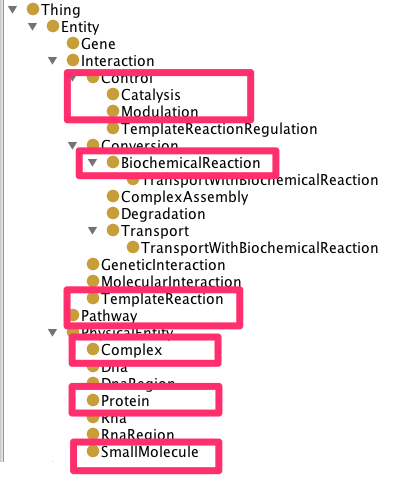
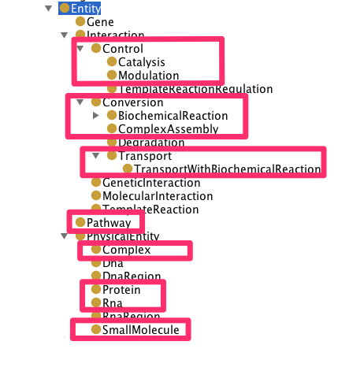

SPARQLthon18/EBI-RDF
提供：TogoWiki
Pathway に関する linked data の活用 は microbedb でもまだ実現されていない。
ここではEBI の Reactome, BioModels のRDFでこれが実現可能か調査を行う。
手始めのtargetは大腸菌(K12 MG1655)とする。
Reactomeはbiopax, BioModelsはsbmlをconvert (https://github.com/sarala/ricordo-rdfconverter) したものを lodestar (https://github.com/EBISPOT/lodestar) にloadしている模様
(追加)
biopax format で記述された pathway database には reactome 以外にも EcoCyc がある。
EcoCyc の biopax は redistrubute が禁止されているため local の virtuoso server に importし reactome との比較も行った。
目次 |
公式サイト
アプリ
James Malone (@jamesmalone): Congratulations Dominik Schweiger of Innsbruck Medical Uni winner of our RDFApp comp. His app is at http://sparqlgraph.i-med.ac.at #emblebi #rdf
これを使うと SPARQL クエリをビジュアルに作れるみたい。EBI 以外にも利用できるかな？
DBCLS の EBI RDF テスト用エンドポイントとグラフ名
select distinct ?g
where {
graph ?g { ?s ?p ?o }
}
- http://rdf.ebi.ac.uk/dataset/biosamples/v20130809
- http://rdf.ebi.ac.uk/dataset/reactome/r45
- http://rdf.ebi.ac.uk/dataset/biomodels/25
- http://rdf.ebi.ac.uk/dataset/chembl/17.0
- http://rdf.ebi.ac.uk/dataset/atlas/13.07
- http://rdf.ebi.ac.uk/dataset/atlas/description
EBIが用意するendpoint
- http://www.ebi.ac.uk/rdf/services/biomodels/sparql
- http://www.ebi.ac.uk/rdf/services/reactome/sparql
biomodelsにおける大腸菌のgenome scale metabolic model
- http://www.ebi.ac.uk/biomodels-main/BIOMD0000000469
- http://www.ebi.ac.uk/biomodels-main/BIOMD0000000470
biomodelsの特性
- RDF化したと言っているが実体はSBMLからのautoconvertのためlinked dataとしての有用性に不安。
- simulationではgenome scale modelの全体ではなく一部をあつかっていた(下記SPARQLで763がもどってくる。iJO1366に含まれる数はこれより多いことは間違いない。iJOのsplでは異compartmentでのspecies[compound]を異speciesとしてcountしておりその総数は1806。最多数のCytosol中のspeciesの総数だけで1040)。
SELECT COUNT (distinct ?name) WHERE {
<http://identifiers.org/biomodels.db/BIOMD0000000469> sbmlrdf:species ?speciesid .
?speciesid sbmlrdf:name ?name}
- BIOMD0000000469, BIOMD0000000470では各人でgenome scale modelから一部の情報を選択し、simulationの抽象度、parameterが異なっている。このため統合対象としてreactome(biopax format), ecocycを優先することにした。
reactome, Ecocyc における大腸菌のpathway(biopax)
biopax中のindividualsの比較
数はEcoCycの方が多いが、EcoCycにはpersistentなresource URIがついていない
% ag identifiers.org biopax-level3.owl %
EcoCycのbiopax-level3.owl中のRDF idの一部(便宜的に付けられたものでこれらのlink先は無い模様)
http://biocyc.org/biopax/biopax-level3RelationshipXref137635 http://biocyc.org/biopax/biopax-level3RelationshipXref85997 http://biocyc.org/biopax/biopax-level3RelationshipXref137636 http://biocyc.org/biopax/biopax-level3BiochemicalPathwayStep151151 http://biocyc.org/biopax/biopax-level3RelationshipXref137637 http://biocyc.org/biopax/biopax-level3RelationshipXref85999 http://biocyc.org/biopax/biopax-level3Rna140891 http://biocyc.org/biopax/biopax-level3Catalysis107857 http://biocyc.org/biopax/biopax-level3UnificationXref79589 http://biocyc.org/biopax/biopax-level3RelationshipXref92317 http://biocyc.org/biopax/biopax-level3Stoichiometry88030 http://biocyc.org/biopax/biopax-level3UnificationXref79588 http://biocyc.org/biopax/biopax-level3UnificationXref79586
下線はそのdatabaseにしか含まれないindividuals
- BiochemicalPathwayStepはKEGGのRPAIRとほぼ同義の模様
- deltaGはGibbs free energy(EcoCycでは15個しかないがiJO1366ではほとんど全てのreactionのdeltaGの情報が付いている)
- FragmentFeatureはSequenceSiteのstartとendで領域を表すもの
{kind=link}
classのhierarchyと存在するindividuals
reactiomeのbiopax 
{kind=link}
ecocycのbiopax 
{kind=link}
結論
- SPARQL活用にはEcoCycにpersistentなURIの付加が必要
- 結局linkdbのようなしくみが必要
biochemical reactionにおける linkdb のようなしくみ
Rheaの情報がidentifiers.orgで使われるようになればURI問題は解決?
Rhea
EBIが運営するmanual annotated reaction database
rheaのreactionと下記reaction databaseとのcross reference情報がまとめられている
- ec number(iubmb)
- EcoCyc
- KEGG
- macie
- MetaCyc
- Reactome
- unipathway
- uniprot
memo
biopax version3 の ttl convert と import
ttl convert
rapper -g -o turtle biopax-level3.owl > biopax-level3.ttl